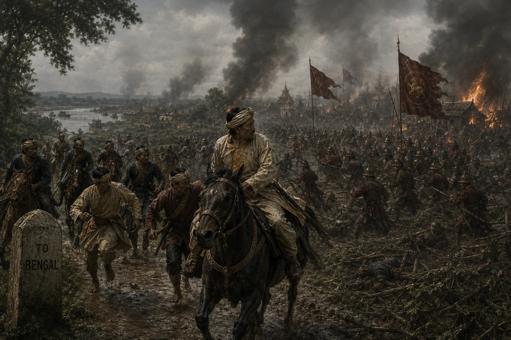

Second Burmese Invasion and Flight of Purandar Singha
February 1819 · The days of the Burmese

Burmese monarch sends large army under Ala Mingi; Purandar and Ruchinath are routed at Nazira and flee into British Bengal territory.
Sources have not yet been catalogued for this record.
People: Kiamingi (Ala Mingi), Purandar Singha, Ruchinath Burhagohain
Open this scene in the interactive archive · Follow this event on MAP